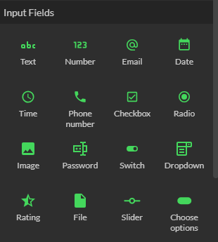
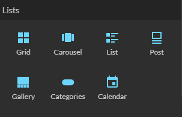

Variables
Dans le contexte d'un outil no-code, une variable est un élément fondamental qui sert à stocker et manipuler des données. Les variables peuvent être considérées comme des conteneurs dans lesquels vous pouvez stocker des informations telles que des nombres, du texte, ou des données plus complexes. Leur principal avantage est qu'elles peuvent changer de valeur au cours de l'exécution de votre application
Création de variables
Il existe 2 types de variables:
- Les variables simples à partir de saisies utilisateurs ou de résultat d'action
- Les variables de sélections à partir de listes
Composants de saisie
Vous pouvez créer des variables simples en utilisant des composants de type Saisies, comme un champ de saisie de texte. Par exemple, un utilisateur peut entrer son nom dans un champ de saisie, et cette entrée est alors stockée dans une variable.
Tous les composants suivants stockent la saisie dans des variables simples

Actions
Les actions peuvent être utilisées pour stocker le résultat d'un traitement dans une variable simple.
| Action | Commentaire |
|---|---|
| Get Current Position | Récupère la position GPS du terminal et la stocke dans une variable simple |
| Increment | Incrémente une variable simple et la stocke à nouveau |
| Scan QR Code | Le code scanné est stocké dans une variable simple |
Composants de sélection
Les composants de type Liste tels que les grilles (Grid), les listes (List) ou les carrousels (Carousel) peuvent être utilisés pour définir des variables de sélections. Lorsqu'un utilisateur sélectionne un élément dans ces composants, l'élément sélectionné est affecté à une telle variable.

Utilisation des Variables
Les variables peuvent être utilisées dans n'importe quel écran. Une variable créée dans un écran peut tout à fait être lue dans n'importe quel autre écran, pas nécessairement le même écran.
Lecture et affichage
Tous les composants visuels, formules et actions dans votre application peuvent lire et afficher les valeurs stockées dans les variables. Cela permet une grande flexibilité dans la présentation et le traitement des données.
Aussi, les variables peuvent être combinées à l'aide de formules pour construire des textes qui contiennent à la fois des mots fixes et variables.
Les variables peuvent être formatées selon leur type pour customiser leur affichage
| Type | Format |
|---|---|
| Nombres | Nombre de décimales Entier |
| Montants | Devises |
| Dates | Date/Heure/Date et Heure Format court ou long |
Manipulation par actions
La plupart des actions permettent d'indiquer des variables dans leurs propriétés pour être exécutées.
Par exemple l'action Navigate définit une propriété appelée URL, cette propriété peut avoir une valeur fixe (par exemple https://zyllio.com) ou bien prendre une variable au préalablement stockée (par exemple site web)
Certaines actions vont produire une valeur et la stocker dans une nouvelle variable ou une variable existante
Bonnes pratiques de nommage
Il est recommandé de nommer les variables avec un nom significatif en fonction de leur usage:
- utilisez Produit Sélectionné sur une liste de produits
- utilisez Code Scanné sur une action Scan QR Code
Une application qui contient des dizaines de variables peut être extrêmement compliquée à maintenir sur le long terme
Si l'application contient des dizaines d'écrans utilisant les mêmes sources de données, il est recommandé de compléter les noms avec davantage de contexte. Par exemple Tous les produits et Produits favoris
Évitez les noms suivants
- les acronymes
- les variables numérotées du type variable 1, variable 2
- noms raccourcis